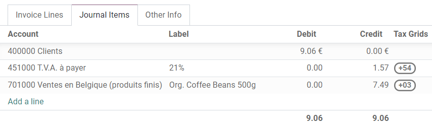
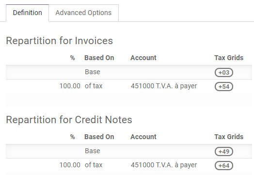
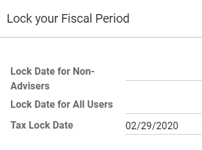
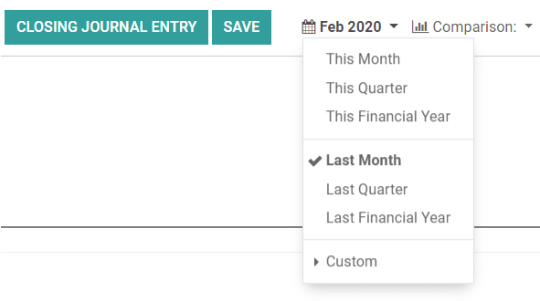
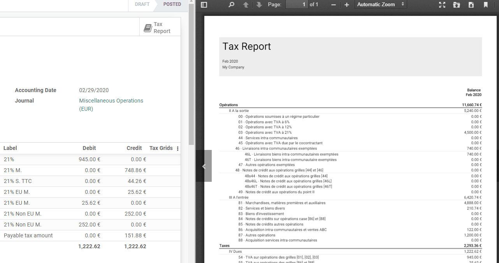

Companies that are registered for VAT (Value Added Tax) must file a Tax return on a monthly or quarterly basis, depending on their turnover and the regulation of the country in which they are registered. A Tax return - or VAT return - gives the tax authorities information about the taxable transactions made by the company, the output tax it has charged its customers, and the input tax its vendors have charged it. Based on these values, the company can calculate the tax amount they have to pay or be refunded.
Note
You can find information about VAT and its mechanism on this page from the European Commission.
Prerequisites
Tax Return Periodicity
The configuration of the Tax Return Periodicity allows Ibel Accounting to compute your Tax Return correctly and also to send you a reminder to never miss a tax return deadline.
To do so, go to , and go to the Tax Return Periodicity section.
- Periodicity: define here whether you file your tax return each month or every three months.
- Reminder: define when Ibel should remind you to file your tax return.
- Journal: select the journal in which to record the tax return.
Note
This is usually configured during the app’s initial set up.
Tax Grids
Ibel generates Tax Reports based on the Tax Grids settings that are configured on your taxes. Therefore, it is crucial to make sure that all the recorded transactions use the right taxes. You can see on each Journal Item which Tax Grid is used for that transaction.
To configure your taxes’ Tax Grids, go to , and open the tax you want to modify. There, you can edit your tax settings, along with the tax grids that are used to record invoices or credit notes.
Note
Taxes and reports are usually already pre-configured: a Fiscal Localization Package is installed according to the country you select at the creation of your database. Click here for more information about Fiscal Localization Packages.
Close a tax period
Tax Lock Date
Any new transaction which accounting date is prior to the Tax Lock Date has its tax values moved to the next open tax period. This is useful to make sure that no change can be made to a report once its period is closed.
Therefore, we recommend locking your tax date before working on your Closing Journal Entry. This way, other users can’t modify or add transactions that would have an impact on the Closing Journal Entry, which helps you avoid some tax declaration errors.
To check the current Tax Lock Date, or to edit it, go to .
Tax Report
Once all the transactions involving taxes have been posted for the period you want to report, open your Tax Report.
To do so, go to . You can also click on TAX Report from your Accounting Overview.
Make sure to select the right period you want to declare by using the date filter. You can see an overview of your tax report. Then, click on the button Closing Journal Entry.
After having reviewed the generated Journal Entry, click on Post. In addition to posting the entry, Ibel automatically creates a PDF file with the Tax Report that you can download from the chatter and preview on the right column. It includes all the values to report to the tax authorities, along with the amount you have to pay or be refunded.
Note
If you forgot to lock your tax date before clicking on Closing Journal Entry, then Ibel automatically locks your fiscal period on the same date as the Accounting Date of your entry. This automatic lock happens when you click on Post. This safety mechanism can prevent some fiscal errors, but it is advised to lock your tax date manually before, as described above.